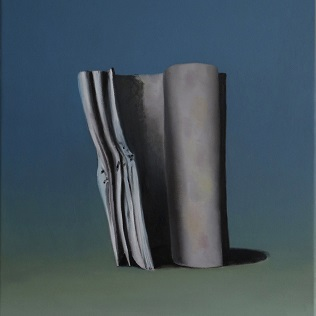
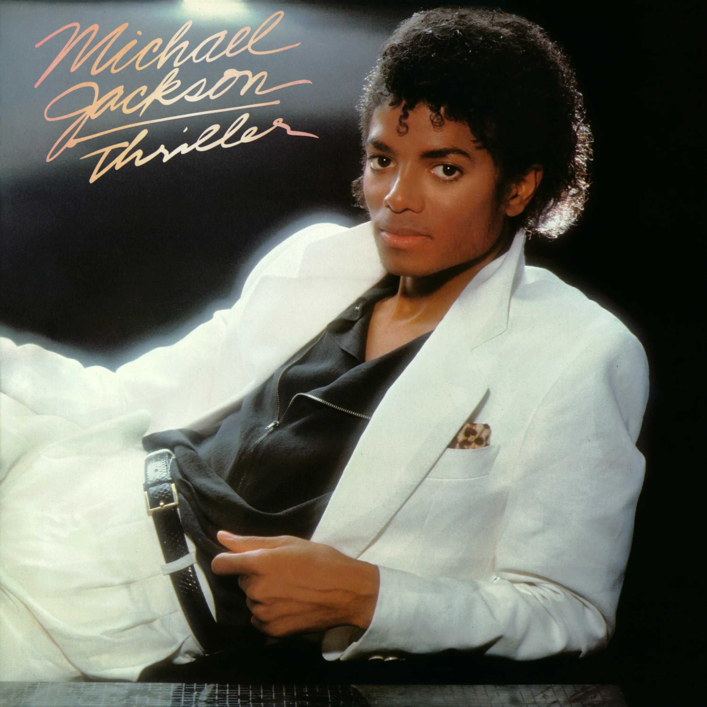
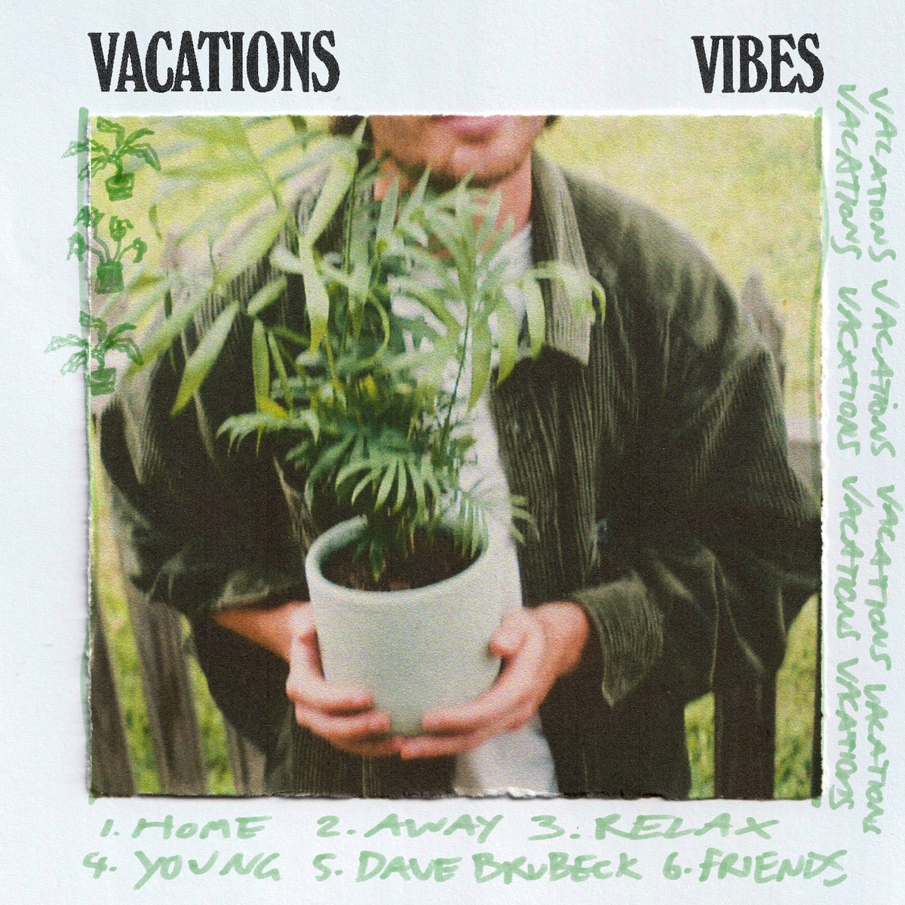
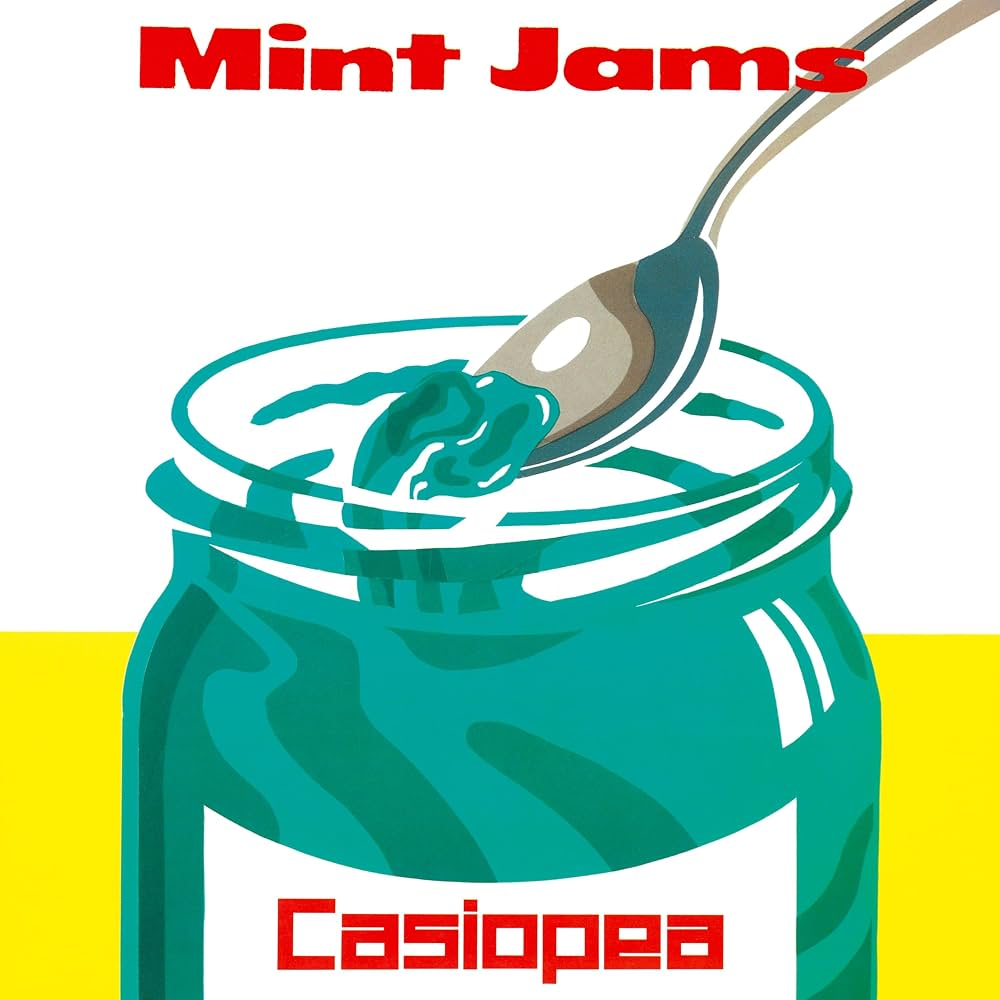
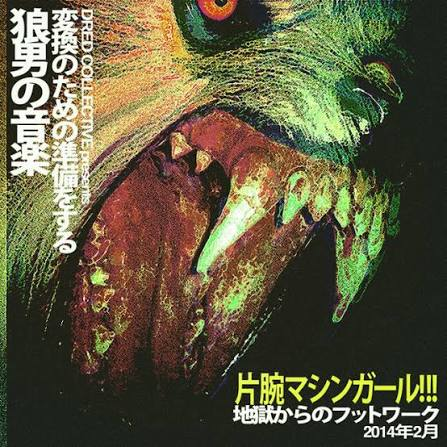
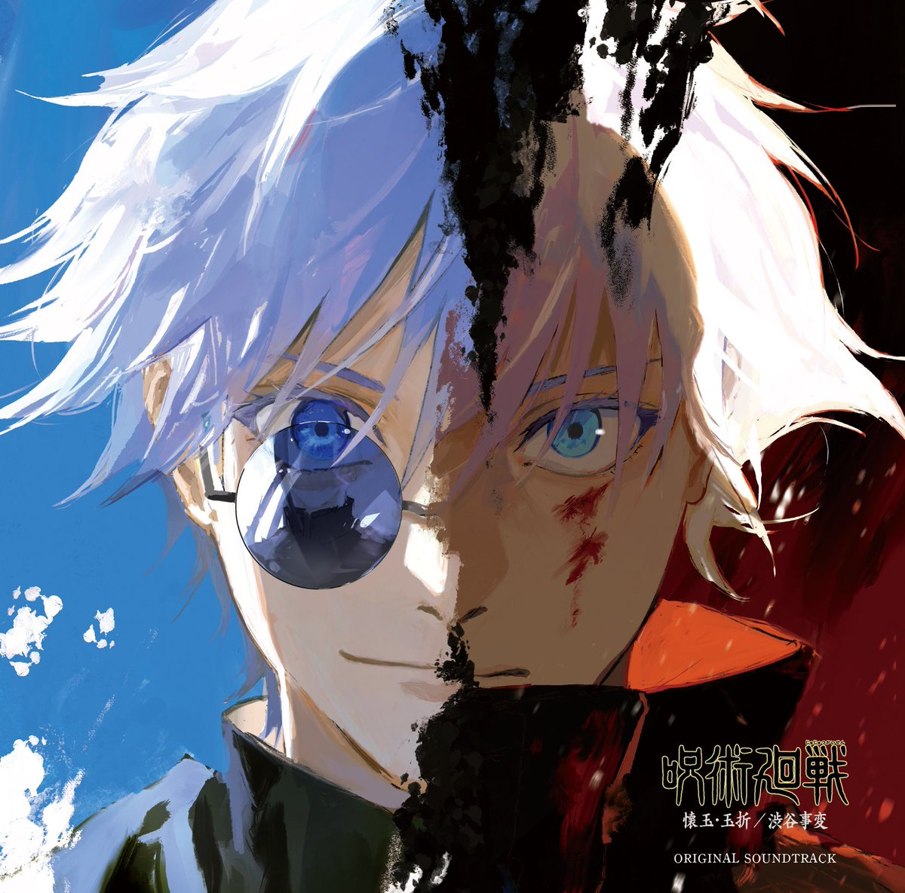
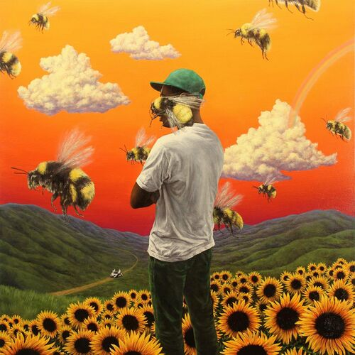
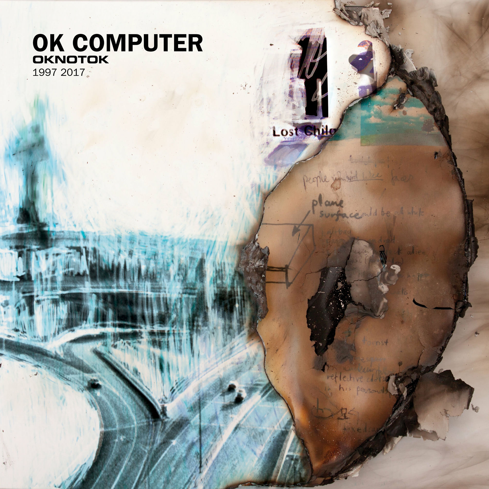
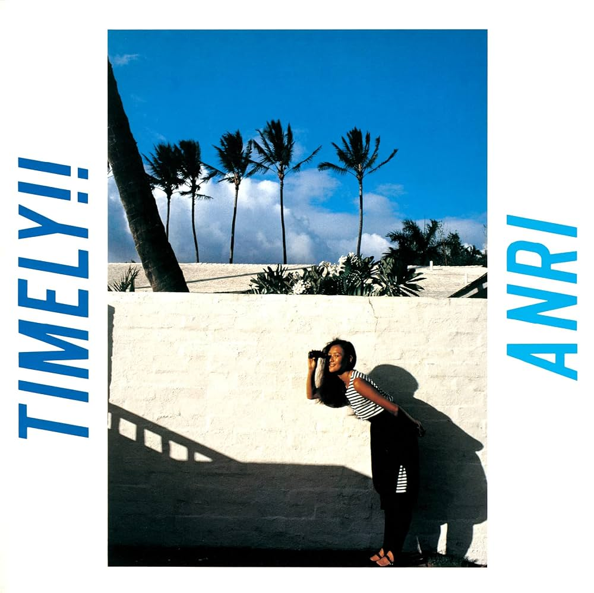
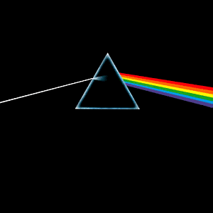

O projeto de "The Caretaker" lançado de 2016 a 2019 é um album razoavelmente desconhecido, e não é sem motivo, este é o album mais experimental que já ouvi. Ele é 100% focado no conceito de simular a esperiencia da demência/alzheimer e conscientizar as pessoas de uma forma muito única.
Faixa favorita: It's just a burning memory

O melhor album do maior icone dos ultimos anos: "Michael Jackson". Esse projeto de 1982 é bem conhecido mas ainda assim temos que lembrar o quanto esse album é magnifico.
Faixa favorita: Billie Jean

EP de estreia lançado em 2016 pela banda indie "Vacations". Esse album passa um sentimento bom em sua totalidade e eu considero uma sonoridade bem construida para um primeiro projeto.
Faixa favorita: Young

O principal album da banda japonesa "CASIOPEA". É um album totalmente instrumental city pop de 1982 com uma sonoridade contendo muitas melodias delisiosas que me agradam demais.
Faixa favorita: Domino Line

Album de estreia do artista MachineGirl lançado em 2014 é muito experimental, focado no breakcore e hard techno. O artista apresenta uma estética muito única com suas distorções e efeitos nas músicas.
Faixa favorita: Krystle

Tecnicamente não é um album mas é como se fosse. Lançado em 2024 juntamente ao anime, essa trilha sonora conta com alguns artistas renomados da area, como Yoshimasa Terui e Tatsuya Kitani. Esse projeto é muito complexo sonoramente e igualmente diverso, sendo capaz de transmitir com perfeição a atmosfera do anime.
Faixa favorita: Thunderclap

Este é o album que colocou Tyler, The Creator no caminho para se tornar um doa maiores artistas dessa geração. Lançado em 2017, esse album avorda uma versão mais introspectiva e sincera do Tyler, e é simplesmente maravilhoso.
Faixa favorita: Boredom

A versão deluxe/remasterizada do clássico de 1997 da banda "Radiohead" fala sobre a alienação tecnologica e desumanização do individuo na sociedade(tema muito bom). Além de ter a uma das melhores tracklist da banda.
Faixa favorita: Let Down

O album de 1983 da artista japonesa "Anri" é um dos principais marcos do city pop japones, basicamente definindo o genero como ele é conhecido e aclamado atualmente.
Faixa favorita: I CAN'T STOP THE LONELINESS

Considerado um dos maiores albuns da historia da música, Dark Side of The Moon de 1973 da banda "Pink Flyod" é sobre a vida, como ela começa se desenvolve e termina. Simplesmente perfeito 10/10 no skips. Esse album é a definição de perfeito.
Faixa faorita: Any Colour You Like